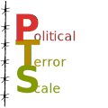

Through the Political Terror Scale dataset, this project aims to explore and visualize the levels of political violence and terror that a country experiences. There are 5 levels of PTS, ranging from 1 (high respect for human rights, little or no political violence) to 5 (widespread terror, systematic human rights violations), based on three different sources:
- Amnesty International
- Human Rights Watch (HRW)
- US State Department reports
For each country, there is an overview of how its PTS level has changed over the years between 1976 and 2024. We're going to use the dataset from politicalterrorscale.org
Title of section 1
Subtitle of section 1
Brief explenation of what there is in this section
Plot 1 + comment